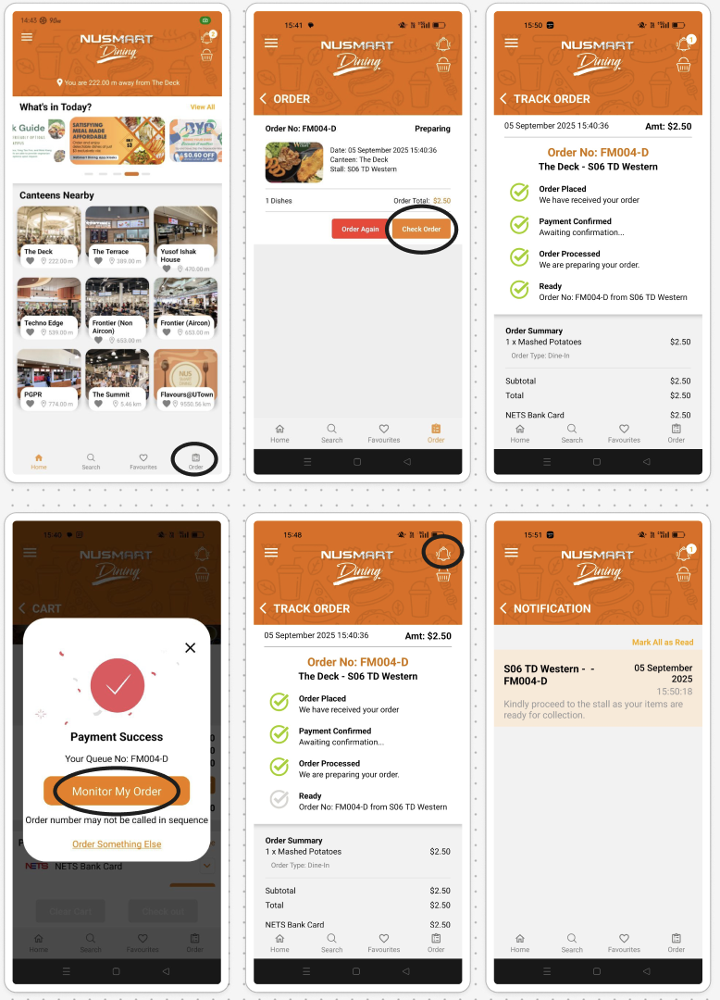
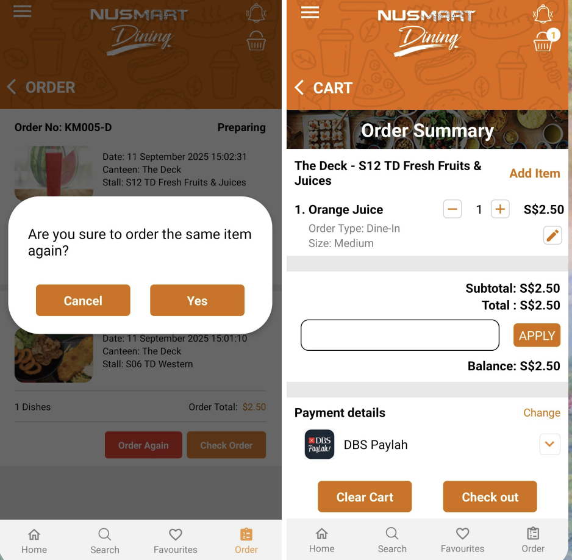
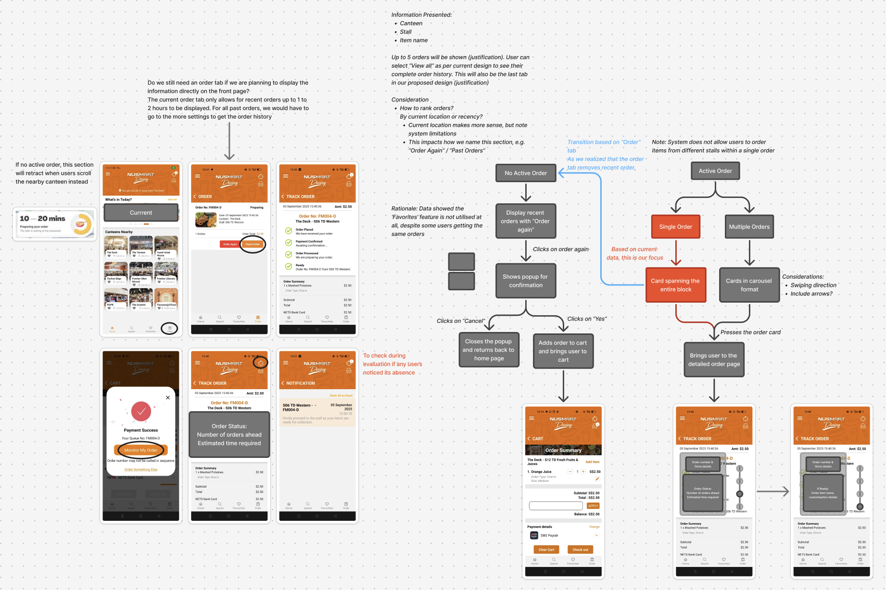

Our group decided to focus on the pain point of order visibility, particularly the vague status of “Preparing” that leaves the waiting period between preparation and collection unclear. To better understand this, we pulled up the relevant interface screens and analysed them using Nielsen’s heuristics.

At first, I was overly critical. This was useful to empathise with users’ frustrations, but it quickly became reductive when I found myself suggesting that features be removed simply because they seemed “useless” or redundant. In hindsight, this was a flattening approach. The fact that the designers chose to include that information meant it must have value for someone. The real challenge is not replacing things, but figuring out how to elevate what was already there and rework information to be more meaningful and digestible.
That shift in mindset helped me recognise the importance of context and stakeholders. For example, on the receipt screen, order numbers and details felt irrelevant at first—why remind users of what they already know? But thinking through the collection stage, it became clear this information is critical for vendors. What matters is not just what is displayed, but to whom and at what point in time. Our navigation flow exercise also reinforced this, since we had to consider multiple scenarios: whether an active order exists, who is viewing the screen, and what their priorities are at that moment.
I also realised how much language and framing shape the way users interpret their own actions. Take the ‘Order Again’ button: its confirmation prompt asks, ‘Are you sure to order the same item again?’. This phrasing implicitly frames repetition as a mistake rather than a convenience, subtly undermining user confidence. It reminded me that text is never neutral — it encodes assumptions about intent and directs how users perceive their choices.

I felt relieved we were only producing the wireframe, as the weight of such micro-decisions was overwhelming. But this also reinforced the value of starting with low-fidelity prototypes: they allow me to focus on structure and flow first, ensuring a solid foundation before layering in details like tone and phrasing, which carry disproportionate influence on the final user experience.
Another important lesson came from examining technical constraints. At first, I dismissed the restriction of not being able to order across stalls as a poor design choice. But deeper analysis of our data showed that most users make single-item purchases, revealing how this constraint reflects actual usage patterns. Perhaps, good design is not always about maximising flexibility for edge cases, but about recognising trade-offs and optimising for the most common, meaningful interactions.
Overall, my biggest learning was to avoid designing from a top-down, idealised vision. It is not about copying what works elsewhere or imposing what I think is “good.” Instead, I should work bottom-up, by starting from what exists, understanding the rationale behind it, and improving it in context. Iterative design becomes less about replacing and more re-framing and aligning information with the needs of different users at different points in their journey.
